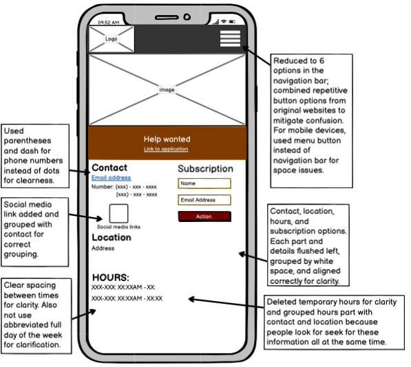
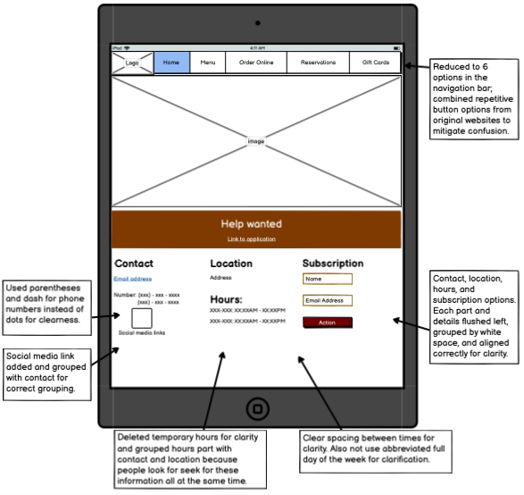
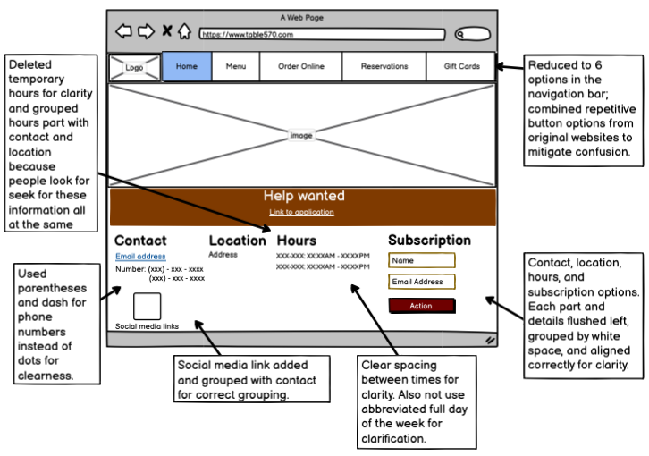

Part 2: Visual Redesign
Low Fidelity Wireframing
  High Fidelity Prototyping

Annotations:
- Since width of mobiles is significantly smaller than that of pads and desktops, I made a menu button(not functional) holding information in the navigation bar instead of original navigation bar.
- For the main image below the navigation bar, I used CSS flexbox, width, and height functionalities to help it fit to difference device sizes.
- For the hiring tab, I used CSS flexbox, width, and text-align functionalities to set the text to center.
- I moved hours part to the footer because these information are similar; people look for these information don't look for these information separately but at the same time.
Annotations:
- Social media buttons only showed up when opened from mobile. So in order to prevent this, I added it to the contact information because social media is a part of contact information.
- In order to prevent not using empty space, I used flexbox to keep track of the 4 information in the footer. Since the pad width is greater than mobile width, there is now more width space for locations and hours parts.
- Since width is greater than mobile, full navigation bar is used instead of menu button.
Annotations:
- Similarly from pad, using flexboxes helps move hours part if there is more width space.
- If the website is fully functional, then clicking navigation bar, buttons, social media logos, application text, and email will work as it should be.